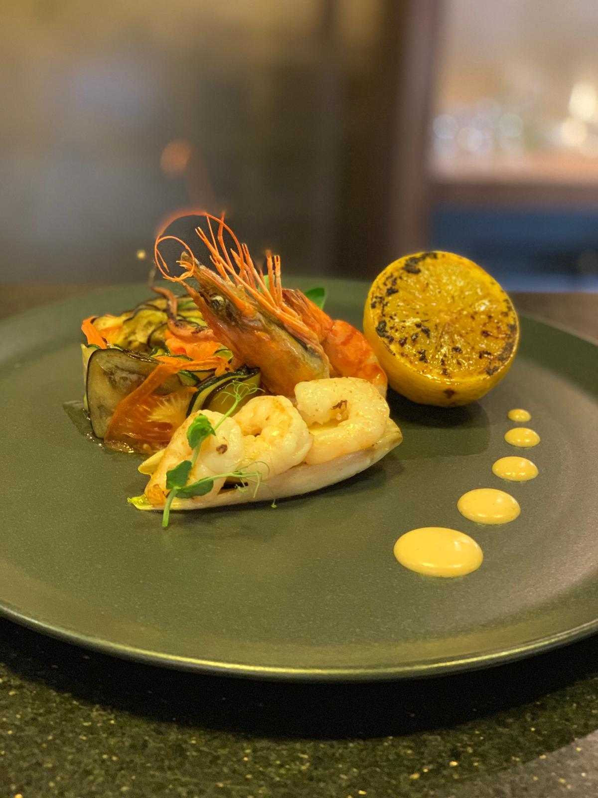
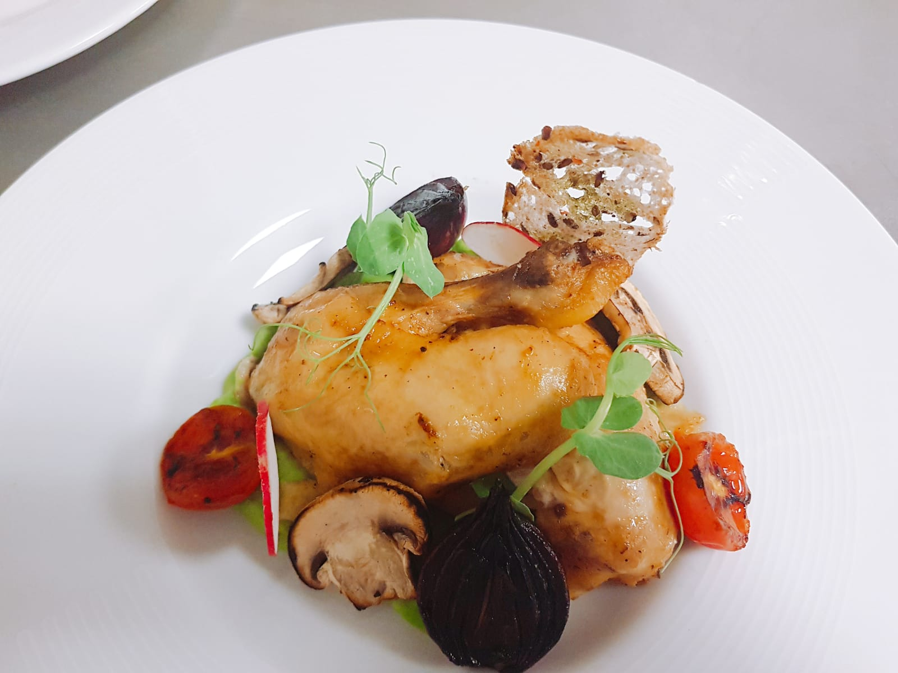
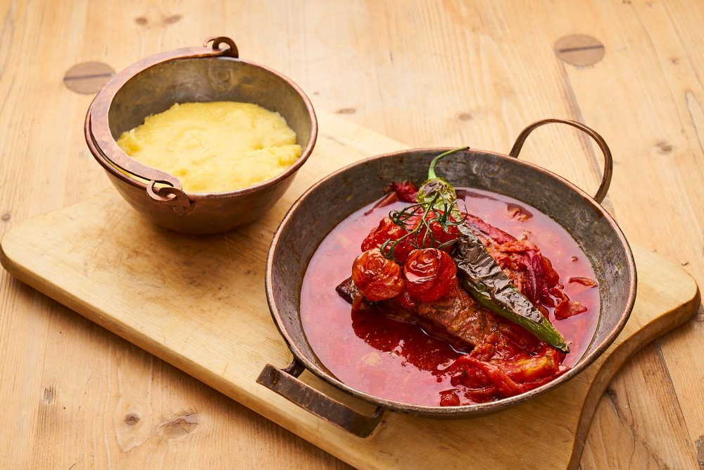
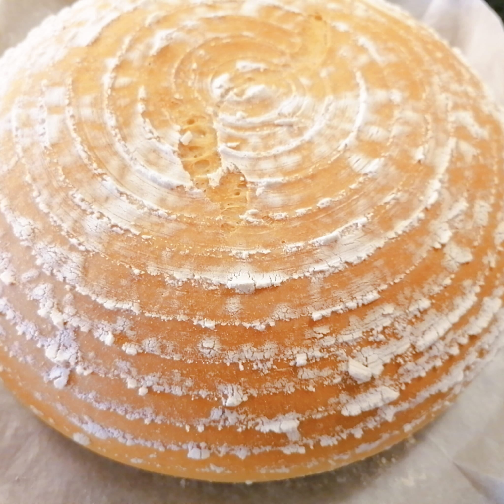
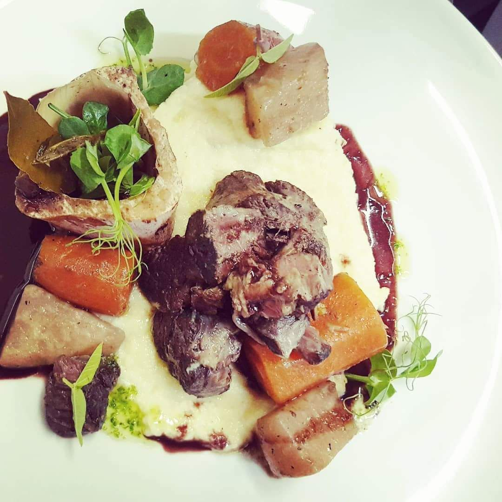

Professional Experience
In this section I will present my various jobs, previous and current, where over the years, I have gained a vast experience in the field of Gastro.
Besides these, I also participated in several seminars and congresses in the field of gastronomy.
I have also read various books by famous chefs, from which I have often been inspired. Among these chefs I list Raymond Blanc, who is my role model in this field,
Tom Keridge, Massimo Bottura.
Besides the fact that I read their books, I had the opportunity to cook or eat in the restaurants of some of them.
I had the opportunity to visit and cook in Raymond Blanc's kitchen and had lunch in Tom Keridge's restaurant.
I will now present my professional experience:

Chef, November 2019 - today, Restaurant "Kafi Pfyfouter", Bern, Switzerland
- Planning and developing menus, taking into account the season, available ingredients and customer preferences.
- Creating and testing new recipes, adapting to current gastronomic trends.
- Supervise the entire cooking process, ensuring that the dishes are prepared according to the standard of quality and time.
- Organization and management of all kitchen staff, including cooks and helpers.
- Coordinating tasks and delegating responsibilities to team members to ensure smooth running of the kitchen.
- Maintaining strict control over food stocks and sourcing quality ingredients.
- Supervise preparation, cooking and presentation ensuring dish consistency and quality.
- Development and implementation of hygiene and food safety standards in the kitchen, complying with health regulations.
- Monitoring the aesthetics of food presentation to ensure that each dish is served in an attractive and tasty way.
- Collaborating with dining room staff to develop needs and preferences and provide customized options.
- Effective cost and budget management for ingredient and equipment application.
- Maintenance of kitchen equipment and work space, making sure all equipment works together.
- Training and ongoing training of new or existing staff in cooking, hygiene and serving techniques.
- Ability to remain calm and efficient in stressful or high workload situations.
- Participating in special events or preparing meals for private events.
- Maintaining the passion for the kitchen and exploring new techniques and trends to maintain the level of excellence in the kitchen.

Chef, april 2019 - october 2019, Restaurant "Villa Giosi", Lago di Tenno, Italy
- Planning and developing menus, taking into account the season, available ingredients and customer preferences.
- Creating and testing new recipes, adapting to current gastronomic trends.
- Supervise the entire cooking process, ensuring that the dishes are prepared according to the standard of quality and time.
- Organization and management of all kitchen staff, including cooks and helpers.
- Coordinating tasks and delegating responsibilities to team members to ensure smooth running of the kitchen.
- Maintaining strict control over food stocks and sourcing quality ingredients.
- Supervise preparation, cooking and presentation ensuring dish consistency and quality.
- Development and implementation of hygiene and food safety standards in the kitchen, complying with health regulations.
- Monitoring the aesthetics of food presentation to ensure that each dish is served in an attractive and tasty way.
- Collaborating with dining room staff to develop needs and preferences and provide customized options.
- Effective cost and budget management for ingredient and equipment application.
- Maintenance of kitchen equipment and work space, making sure all equipment works together.
- Training and ongoing training of new or existing staff in cooking, hygiene and serving techniques.
- Ability to remain calm and efficient in stressful or high workload situations.
- Participating in special events or preparing meals for private events.
- Maintaining the passion for the kitchen and exploring new techniques and trends to maintain the level of excellence in the kitchen.

Executive Sous-chef, 2019, Cantacusino Castle, Busteni, Romania
- Working closely with the Head Chef in menu planning and development as well as in the operational management of the kitchen.
- Supervising the cooking process and ensuring that all dishes are prepared according to quality and time standards.
- Coordinating and supervising the kitchen team, ensuring team members complete assigned tasks.
- Active participation in the creation and testing of new recipes, adapted to customer requirements and current trends in gastronomy.
- Organizing ingredient preparation, cooking and presentation to ensure uniformity and consistency in the kitchen.
- Maintaining a high standard of food hygiene and safety in accordance with health regulations.
- Delegation of tasks and training of staff in cooking techniques, safety and hygiene.
- Monitoring food stocks and sourcing quality ingredients in collaboration with the Head Kitchen and Sourcing team.
- Direct coordination with service staff to ensure efficient service and a pleasant customer experience.
- Active participation in the development and implementation of new menus and culinary concepts.
- Manage costs and allocated budget for supplies and equipment in collaboration with management.
- Supervision and maintenance of kitchen equipment and work space.
- Performing administrative tasks such as making activity reports, scheduling staff and managing the work schedule.
- Ensuring effective communication between the various departments in the kitchen and restaurant.
- Involvement in ongoing staff training and development, including training in new cooking techniques.
- Ability to take over in the absence of the Head Chef and coordinate daily operations.
- Maintaining a positive and collaborative work environment in the kitchen.

Chef, june 2018 - august 2018, Restaurant "IDracula", Bucharest, Romania
- Planning and developing menus, taking into account the season, available ingredients and customer preferences.
- Creating and testing new recipes, adapting to current gastronomic trends.
- Supervise the entire cooking process, ensuring that the dishes are prepared according to the standard of quality and time.
- Organization and management of all kitchen staff, including cooks and helpers.
- Coordinating tasks and delegating responsibilities to team members to ensure smooth running of the kitchen.
- Maintaining strict control over food stocks and sourcing quality ingredients.
- Supervise preparation, cooking and presentation ensuring dish consistency and quality.
- Development and implementation of hygiene and food safety standards in the kitchen, complying with health regulations.
- Monitoring the aesthetics of food presentation to ensure that each dish is served in an attractive and tasty way.
- Collaborating with dining room staff to develop needs and preferences and provide customized options.
- Effective cost and budget management for ingredient and equipment application.
- Maintenance of kitchen equipment and work space, making sure all equipment works together.
- Training and ongoing training of new or existing staff in cooking, hygiene and serving techniques.
- Ability to remain calm and efficient in stressful or high workload situations.
- Participating in special events or preparing meals for private events.
- Maintaining the passion for the kitchen and exploring new techniques and trends to maintain the level of excellence in the kitchen.
.jpg)
Chef, april 2017 - january 2019, Restaurant "Matrioska", Bucharest, Romania
- Planning and developing menus, taking into account the season, available ingredients and customer preferences.
- Creating and testing new recipes, adapting to current gastronomic trends.
- Supervise the entire cooking process, ensuring that the dishes are prepared according to the standard of quality and time.
- Organization and management of all kitchen staff, including cooks and helpers.
- Coordinating tasks and delegating responsibilities to team members to ensure smooth running of the kitchen.
- Maintaining strict control over food stocks and sourcing quality ingredients.
- Supervise preparation, cooking and presentation ensuring dish consistency and quality.
- Development and implementation of hygiene and food safety standards in the kitchen, complying with health regulations.
- Monitoring the aesthetics of food presentation to ensure that each dish is served in an attractive and tasty way.
- Collaborating with dining room staff to develop needs and preferences and provide customized options.
- Effective cost and budget management for ingredient and equipment application.
- Maintenance of kitchen equipment and work space, making sure all equipment works together.
- Training and ongoing training of new or existing staff in cooking, hygiene and serving techniques.
- Ability to remain calm and efficient in stressful or high workload situations.
- Participating in special events or preparing meals for private events.
- Maintaining the passion for the kitchen and exploring new techniques and trends to maintain the level of excellence in the kitchen.

Chef, march 2013 - april 2017, Restaurant "Lacrimi si Sfinti", Bukarest, Romania
- Planning and developing menus, taking into account the season, available ingredients and customer preferences.
- Creating and testing new recipes, adapting to current gastronomic trends.
- Supervise the entire cooking process, ensuring that the dishes are prepared according to the standard of quality and time.
- Organization and management of all kitchen staff, including cooks and helpers.
- Coordinating tasks and delegating responsibilities to team members to ensure smooth running of the kitchen.
- Maintaining strict control over food stocks and sourcing quality ingredients.
- Supervise preparation, cooking and presentation ensuring dish consistency and quality.
- Development and implementation of hygiene and food safety standards in the kitchen, complying with health regulations.
- Monitoring the aesthetics of food presentation to ensure that each dish is served in an attractive and tasty way.
- Collaborating with dining room staff to develop needs and preferences and provide customized options.
- Effective cost and budget management for ingredient and equipment application.
- Maintenance of kitchen equipment and work space, making sure all equipment works together.
- Training and ongoing training of new or existing staff in cooking, hygiene and serving techniques.
- Ability to remain calm and efficient in stressful or high workload situations.
- Participating in special events or preparing meals for private events.
- Maintaining the passion for the kitchen and exploring new techniques and trends to maintain the level of excellence in the kitchen.

Italian Pizzaiollo, septembre 2011 - february 2013, Bucharest, Romania
- Preparation of pizza dough, including kneading, expansion and proper crust formation.
- Applying and evenly distributing ingredients such as tomato sauce, cheese, vegetables and meat.
- Skilled operation of pizza oven and other necessary equipment.
- Cooking and monitoring pizza in the oven to ensure even baking and achieve high quality results.
- Developing and testing new combinations of pizza ingredients and experimenting with new flavors.
- Managing customer orders and ensuring the pizza is prepared in an optimal time.
- Ensuring compliance with hygiene and food safety standards in the kitchen.
- Keeping and organizing inventory of ingredients, including basic pizza ingredients.
- Ensuring that all pizzas are presented beautifully and in an appetizing manner.
- Maintaining cleanliness in the work area and the equipment used.
- Coordinating with wait staff to ensure timely delivery of orders and fresh pizza.
- Ability to manage workload and maintain quality at peak times.
- Collaborating with teammates and kitchen staff to maintain effective communication.
- Understanding and following safety rules at work, including those related to equipment and utensils.
- Ability to work under pressure and maintain a steady work pace in a fast-paced environment.
- Participate in ongoing training and development in new and improved techniques.
- Maintaining standards of pizza quality and presentation to meet customer expectations.

Baker, Pastry, November 2006 - Mai 2011, Panificio Bruno Dorigati, Ala, Italy
- Preparation of dough for different types of bread, pastries and confectionery.
- Mixing, kneading and forming dough according to specific recipes and techniques.
- Baking bread and pastries in specialist ovens and appliances, ensuring they are properly cooked.
- Creating and preparing baked goods such as cakes, cookies, eclairs, macarons and other desserts.
- The artistic decoration and presentation of pastry products, using glazes, ornaments and other ingredients.
- Developing new and innovative recipes to meet customer preferences and expectations.
- Managing and organizing ingredient stocks, including basic ingredients and baking materials.
- Ensuring compliance with hygiene and food safety standards at all stages of the preparation process.
- Maintaining the cleanliness of the work area and the utensils used, as well as the pastry equipment.
- Collaborating with teammates to ensure effective communication and proper coordination.
- Ability to operate special equipment such as mixing machines, convection ovens and other pastry tools.
- Coordinating with service staff to ensure the correct presentation and delivery of baked goods to customers.
- Maintaining quality standards to provide fresh and delicious baked goods to customers.
- Constantly learning and improving baking and pastry techniques to stay up to date with industry trends.
- Creating and managing the work schedule, taking into account the specific requirements of the business.
- Ability to adapt recipes based on dietary requirements or customer preferences.
- Monitoring production costs and effective ingredient management to maintain profitability.

Pastry, august 2006 - novembre 2006, Pasticeria Dall'Omo, Verona, Italy
- Learning the basic techniques of dough preparation for different types of pastries.
- Assisting in the baking process of bread and pastries under the supervision of an experienced baker.
- Preparing and measuring the ingredients needed for the given recipes.
- Assembling and packaging the finished products, respecting the rules of presentation and appearance.
- Decorating pastries under the guidance and supervision of the baker or head pastry chef.
- Cleaning and maintaining cleanliness in the work area and the utensils used.
- Compliance with hygiene and food safety standards in all aspects of the activity.
- Learning to use pastry equipment and tools.
- Participating in the preparation of ingredients and the preliminary preparation of recipes.
- Observing and learning the techniques of preparation, baking and presentation of pastry products.
- Ensuring that all products conform to established quality and appearance standards.
- Collaborating with teammates to ensure effective coordination and learning from other team members.
- Perform administrative or cleaning duties as required by location.
- Developing skills in the artistic presentation of pastries and desserts.
- Learning and perfecting specific baking and pastry techniques.
- Attending trainings and workshops to learn new techniques and skills in the field.
- Demonstrating attention to detail and passion for the art of pastry making.
- Adherence to work hours and availability requirements specified by the employer.

Cook, mai 2004 - april 2006, Restaurant "La Radu", Bucharest, Romania
- Learning basic food preparation techniques such as cutting, cleaning and cooking.
- Participating in the preparation of ingredients for various recipes under the supervision of more experienced chefs.
- Assembling and arranging ingredients for various dishes under the direction of the head chef.
- Preparation of utensils and work area before starting cooking activities.
- Compliance with hygiene and food safety standards in all stages of work.
- Learning to use and maintain kitchen equipment.
- Participating in the cooking process to prepare different dishes.
- Observing and learning cooking and food presentation techniques.
- Cleaning and maintaining the cleanliness of the kitchen area and utensils.
- Participating in the storage and organization of ingredients and inventory.
- Collaborating with colleagues to ensure effective coordination in the kitchen.
- Perform administrative or cleaning duties as required by the kitchen.
- Developing skills in the artistic presentation of dishes.
- Learning and perfecting specific cooking techniques.
- Attending instruction and training to learn new techniques and skills in the kitchen.
- Demonstrating attention to detail and a passion for cooking.
- Adherence to employer specific work schedule and availability requirements.